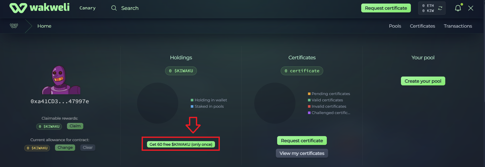

Get free $KIW from the faucet
To help new users onboard quickly, Wakweli provides a free 60 $KIW faucet directly on the Base network. This faucet is accessible from the main interface when you have a balance of 0 $KIW in your wallet.
And if you use to the Base Account smart wallet, so you can start using the protocol immediately: no seed phrase, no gas fees, no external funding.
What you get:
- 60 $KIW credited to your wallet (gas sponsored if you use the Base Account smart wallet)
- Enough to request, review, and challenge certificates on the Canary Mainnet.
- Refills are not automatic: the faucet is a one-time grant per user to kickstart your journey.
How to Claim

- Go to https://canary.wakweli.com/
- Click the "Connect Wallet" button on the top right
- Select your prefferred wallet (if you don't have a wallet yet, choose Base Account)
- Once connected, open the user panel by clicking on the top-right button
- Click on the "Get 60 free $KIWAKU" button in the "Holdings" section
- Comfirm the transaction in your wallet (no gas needed with a Base Account wallet)
- The faucet credits your wallet with 60 $KIW instantly.
Check your wallet balance on the interface to confirm.
Start using the protocol
Use your 60 $KIW to:
- Request certificates
- Review certificates
- Challenge doubtful submissions
Why 60 $KIW?
- Designed as an onboarding allocation.
- Ensures users can explore Wakweli features without worrying about balances.
- Combined with Sponsored Paymaster gas credits, it means a completely free first experience.
Notes
Faucet is only distributed once per Base Account wallet.
If you need more tokens later, you can:
- Earn them through protocol activity.
- Bridge additional $KIW from Ethereum.
- Contact us on Discord (via the #get-ticket channel)